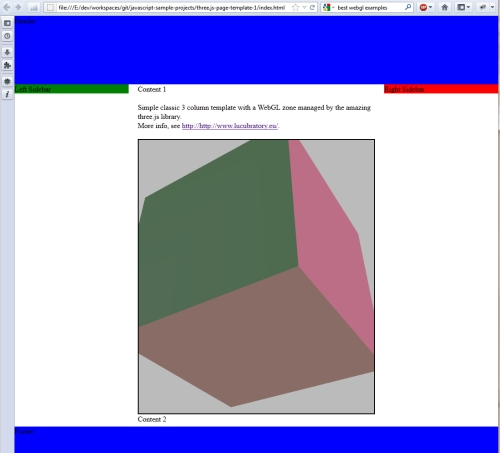

Project: Classic 3-Column CSS Layout with WebGL Zone
WebGL is a fascinating thing! If you google keywords like "best webgl examples", you will find a multitude of 3D demos that literally blow your mind with stunning 3D effects running in your (modern) browser.
While the pure WebGL is quite unhandy, libraries like glMatrix (https://github.com/toji/gl-matrix) that handles matrix and vector operations (translate, scale, rotate) makes a JavaScript developers life much easier. Nevertheless, you will quickly get lost in 3D object definitions and coordinates matrix chaos. Cubes are easy, cylinders less, but the famous tea cup...
That's where full blown 3D JavaScript libraries enter into the arena. You can define scenes, add cameras, load complex objects built with 3D applications like Blender and Wings 3D, define viewports and light sources, and all is rendered into your browser window just by snapping your fingers.
In my personal case, I needed a WebGL "window" within my classic 3 columns HTML layout. My choice felt on the amazing Three.js library (https://github.com/mrdoob/three.js) and with the help of Jerome's "Three.js Boilerplate Builder", my base project was quickly created. After modifying the CSS and HTML template, as well as adding support for window re-size, the template looks like this:
